Довгі вільні хвилі
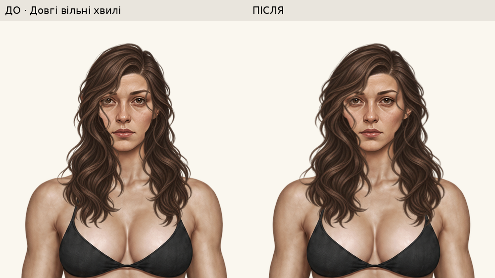
Вуха, щоки й бічний вузол · 300%
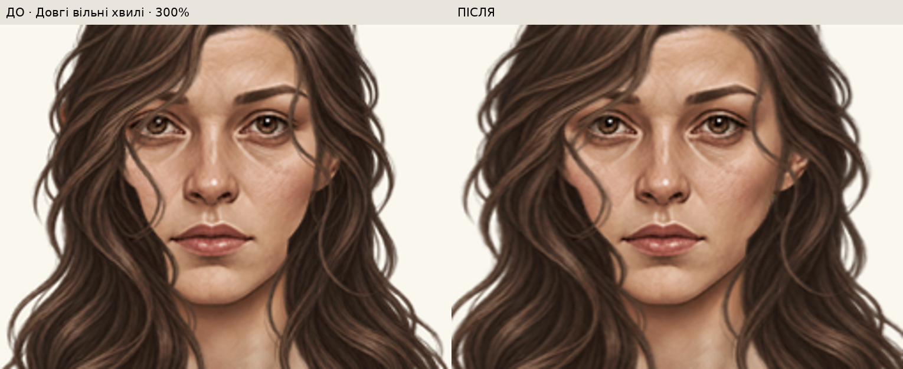
Усі 17 жіночих облич

25 кольорів

Білий, сірий, чорний і зелений фони

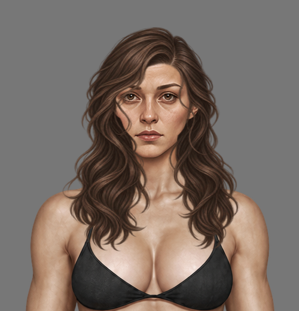
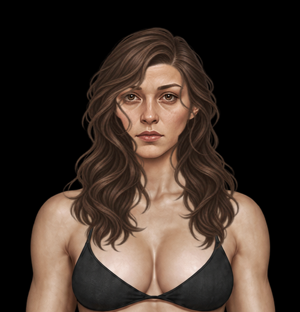
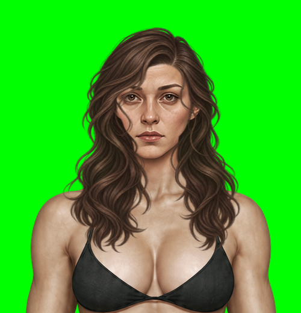
Піксі та каре до щелепи збережені байт у байт. Довгі хвилі розширені біля вух; у хвоста припасований правий виріз; зібрана коса зменшена на 16% навколо маківки, бічний вузол піднятий і наближений до вуха. Полотно, runtime-посадка, голови, тіла та кольори не змінені.
Кадри справжнього index.html через renderPaperDollAt; однаковий масштаб і положення до/після.
Завантажити автономний HTML · Звіт · Відкрити гру






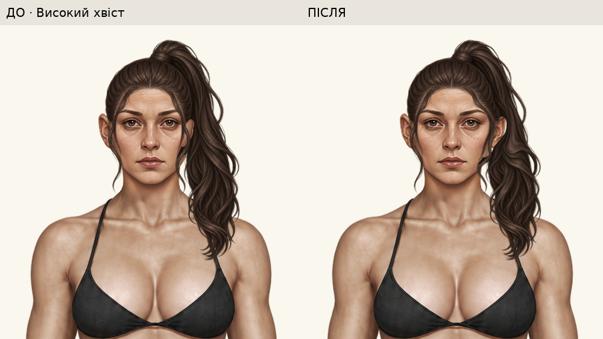
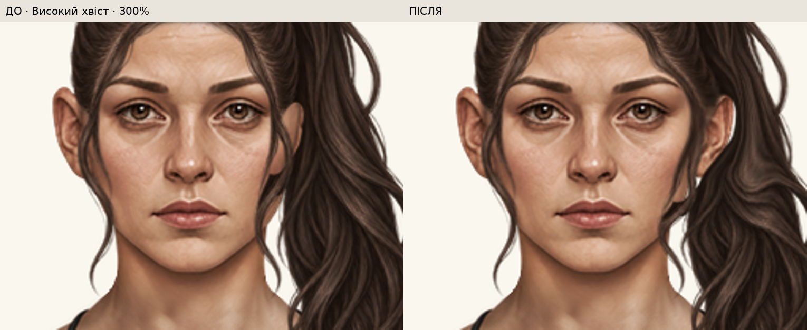


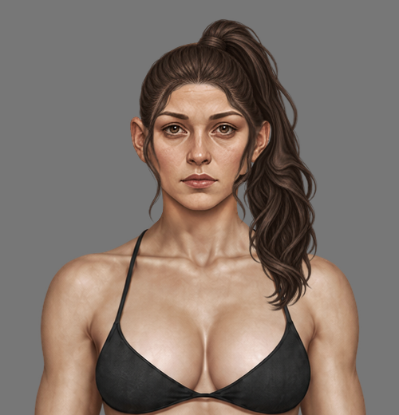
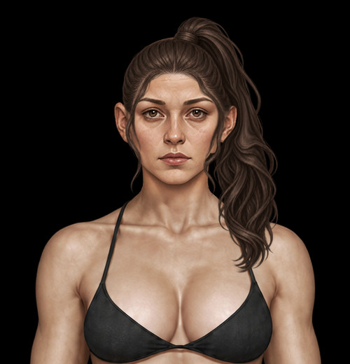
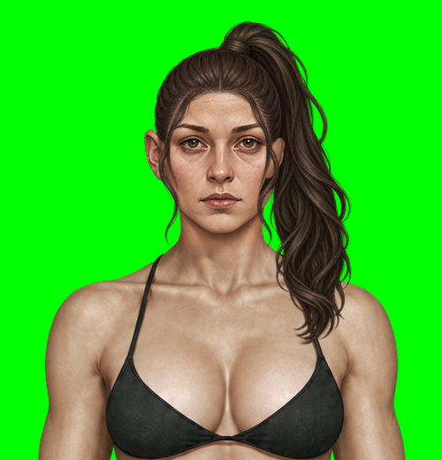
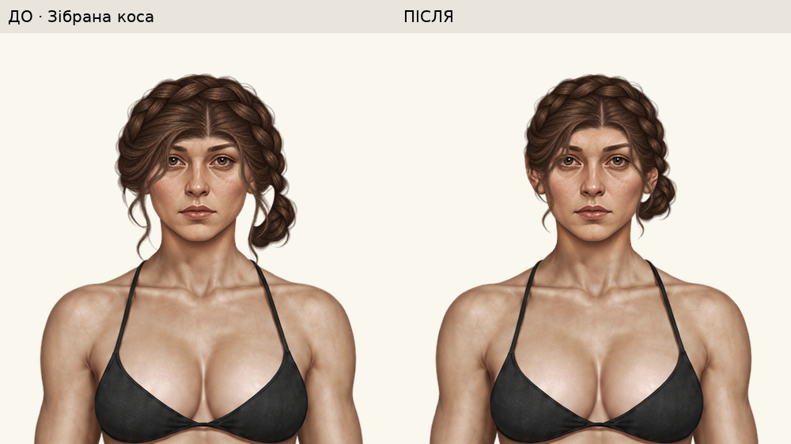
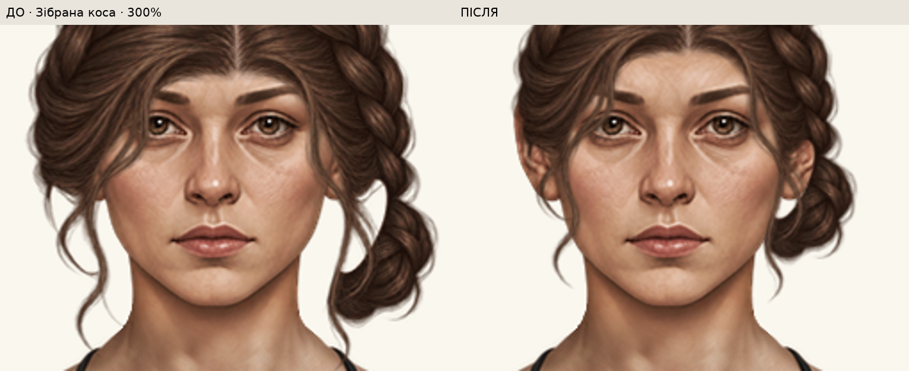


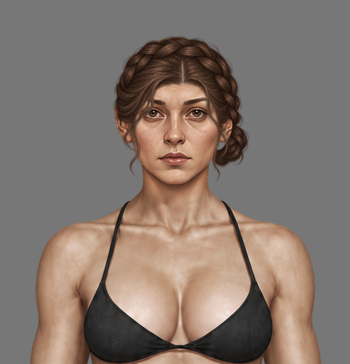
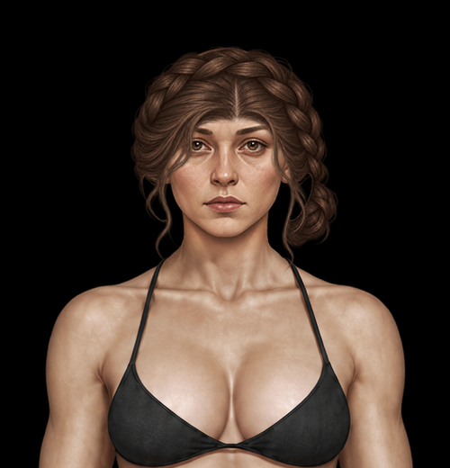
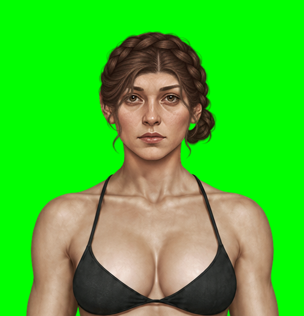
[
{
"key": "long-waves",
"path": "assets/wardrobe/hair/female-five/long-waves.png",
"before_sha256": "71773bf120cd23dabbf08044412326d5dbb4e0a12f765da736d975793e3e28d2",
"after_sha256": "3fbd66e31df5f0ed1cdc80adbddabd2ffa382618f9978f56ae51b771e6c6e40d",
"changed_pixels": 61256,
"geometry": {
"axis_x": 472.5,
"rows": [
0,
33,
80,
140,
185,
250,
420,
1671
],
"horizontal_scale": [
1,
1.03,
1.08,
1.14,
1.12,
1.08,
1.08,
1.08
],
"vertical_change": 0,
"purpose": "widen outer ear framing and face opening together; retain clear iris from preceding pass"
},
"alpha_bbox": [
325,
23,
624,
403
]
},
{
"key": "high-ponytail",
"path": "assets/wardrobe/hair/female-five/high-ponytail.png",
"before_sha256": "6861cfa03005791ff8147aaac28cd2475ce54fdb761b169b0363a39bbfaf2a5c",
"after_sha256": "867d1086dd51c9c0220e9f0947df0c256ed5ce6428147882e1cd434a31f5e4d3",
"changed_pixels": 9893,
"geometry": {
"affected_box": [
500,
101,
620,
229
],
"source_x": [
500,
525,
540,
565,
620
],
"target_x": [
500,
537,
559,
574,
620
],
"source_y": [
100,
130,
165,
195,
230
],
"target_y": [
100,
124,
185,
208,
230
],
"purpose": "register the existing right ear opening to x545..560, y128..180; do not move crown, left side or lower tail",
"horizontal_strength_rows": [
0,
100,
124,
142,
155,
170,
185,
208,
230,
1671
],
"horizontal_strength": [
0,
0,
0.7,
1,
0.9,
0.45,
0,
0,
0,
0
]
},
"alpha_bbox": [
395,
2,
621,
370
]
},
{
"key": "braided-updo",
"path": "assets/wardrobe/hair/female-five/braided-updo.png",
"before_sha256": "f40e455afde22ed1d871a7bd7fcad4e734bf8c2f8b63455b617f8a1e64dedf10",
"after_sha256": "6cda953f51ad0a3d852ba2c5572d5b7587f06ddb8e3da88c4c8c7405ae690df6",
"changed_pixels": 29081,
"geometry": {
"uniform_art_scale": 0.84,
"anchor": [
472.5,
33
],
"runtime_placement_unchanged": true,
"purpose": "reduce crown and attached side braid together; bring right chignon upward and inward behind ear"
},
"alpha_bbox": [
382,
30,
580,
243
]
}
]